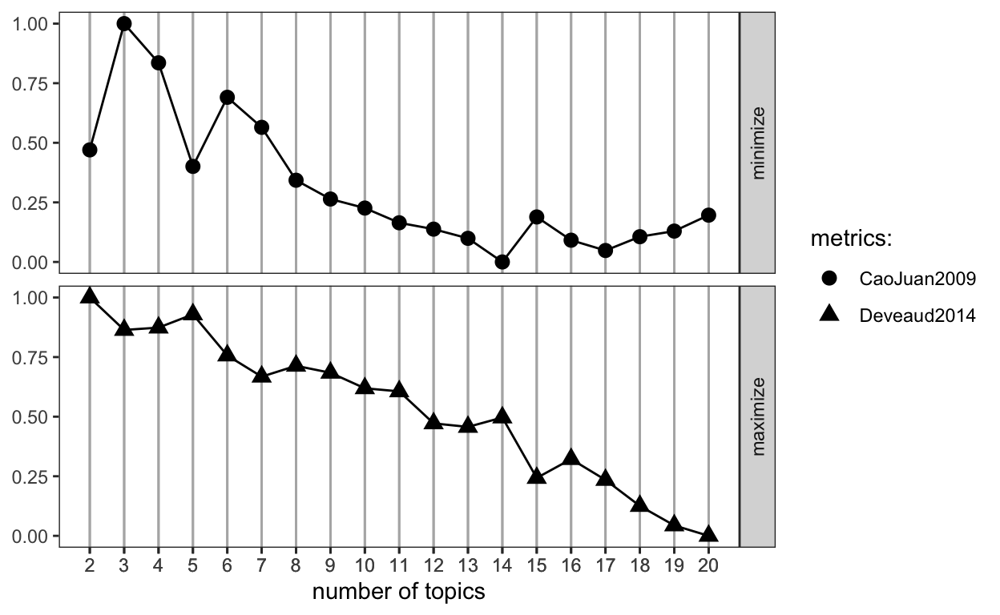
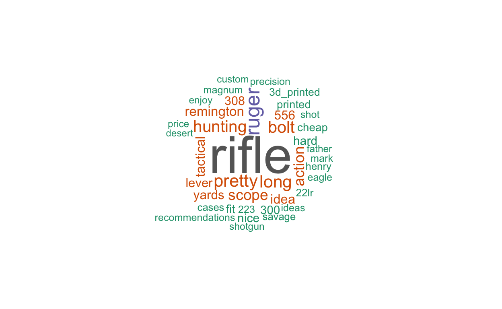
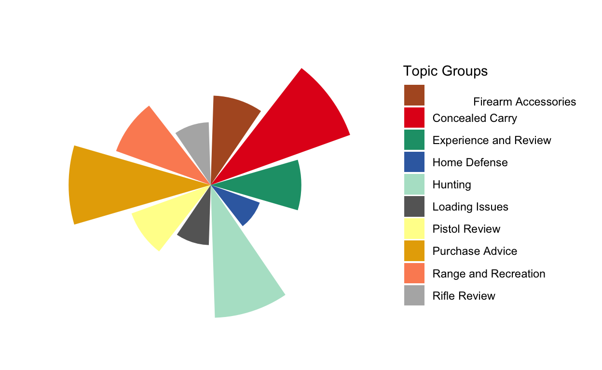
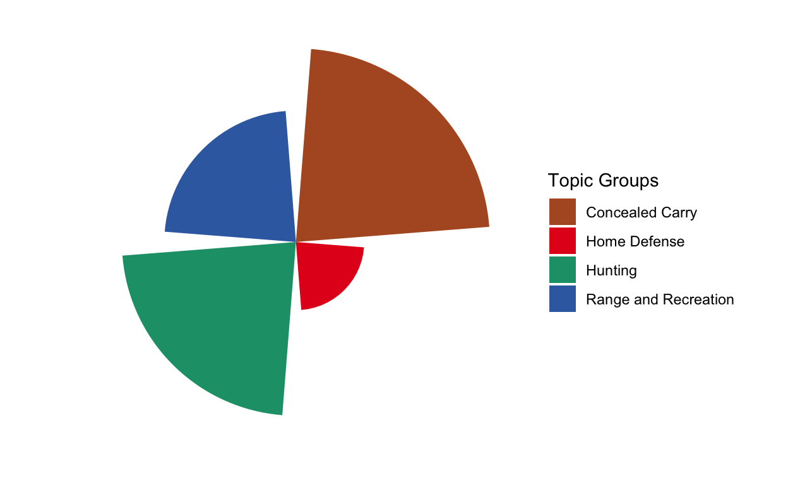
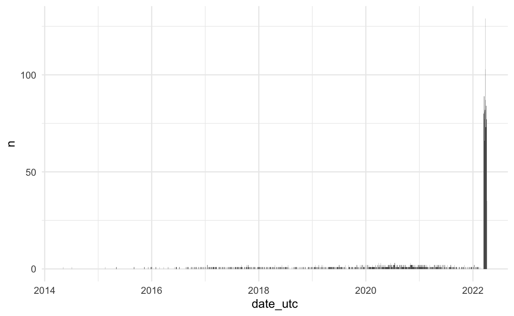

Overview
Explanation: In this post I go through my final visualizations for my text-as-data poster. These Include my final steps of analysis that are consistent with what is seen on my submitted poster.
Loading Required Packages
Basis: Firstly I load quite a few packages, both those I need for the final paper, and a number of packages that I used in coming up with my research design. I specifically us the tm package for topic modeling with LDA or latent Dirichlet allocation.
library(rmarkdown)
library(RedditExtractoR)
library(jsonlite)
library(tidyverse)
library(stringr)
library(dplyr)
library(httr)
library(tm)
library(corpus)
library(quanteda)
library(textclean)
library(knitr)
library(lubridate)
library(cleanNLP)
library(quanteda.textstats)
library(quanteda.textplots)
library(SnowballC)
library(wordcloud)
library(RColorBrewer)
library(stopwords)
library(tidyverse)
library(rvest)
library(tidytext)
library(text2vec)
library(preText)
library(ggplot2)
library(pals)
library(reshape2)
library(lda)
library(ldatuning)
# install klippy for copy-to-clipboard button in code chunks
remotes::install_github("rlesur/klippy")
Loading and Scraping Data
Basis: First I load my Rdata in using a custom function. Though I don’t have the code running for api purposes the RedditExtractoR code I used is included.
set.seed(836)
# First I use a fucntion to load an RData file as R has no default
loadRData <- function(fileName){
#loads an RData file, and returns it
load(fileName)
get(ls()[ls() != "fileName"])
}
# My first data frame comprises new posts as of march 26 2022 which are taken
# from the 15th-26th of march primarily.
# new_guns_urls <- find_thread_urls(subreddit="guns", sort_by="new")
new_guns_urls <- loadRData("/Users/noahmilstein/Desktop/Spring 2022/Textasdata/text_as_data_work/New_reddit_posts_3_26.RData")
# Next I extract the 4 columns that I will need, title, date, comments
# and non-title text
new_guns_urls_df<-new_guns_urls[,c("title", "date_utc", "comments", "text")]
# Next I load the top posts of all time on the thread which go back to 2017
# With observations to march 2022 when it was scraped.
top_guns_urls <- loadRData("/Users/noahmilstein/Desktop/Spring 2022/Textasdata/text_as_data_work/top_guns_urls.RData")
# top_guns_urls <- find_thread_urls(subreddit="guns", sort_by="top")
top_guns_urls_df<-top_guns_urls[,c("title", "date_utc", "comments", "text")]
#hot_guns_urls <- find_thread_urls(subreddit="guns", sort_by="hot")
# save(hot_guns_urls, file="hot_guns_urls.RData")
# Next "hot" posts are loaded which are also primarily from march 2022
# hot_guns_urls <- find_thread_urls(subreddit="guns", sort_by="got")
hot_guns_urls<-
loadRData("/Users/noahmilstein/Desktop/my_blog/_posts/2022-03-29-tad-post-4/hot_guns_urls.RData")
hot_guns_urls_df<-hot_guns_urls[,c("title", "date_utc", "comments", "text")]
#hot_guns_urls_df
Initial Data Cleaning
Basis: Explanation for each step is included in the code below and mostly entails adding row numbers then combining all 3 data frames for new, top, and hot posts together.
set.seed(836)
#First I add rownames from 1 to 844 to the hot guns data frame
rownames(hot_guns_urls_df) <- seq(1, 844, 1)
#Next I add rownames from 1 to 980 to the new guns data frame
rownames(new_guns_urls_df) <- seq(1, 980, 1)
#Next I add the two row named data framed together by row.
hg_and_ng<-rbind(hot_guns_urls_df, new_guns_urls_df)
#After this I add rownames from 1 to 996 to the top guns data frame
rownames(top_guns_urls_df) <- seq(1, 996, 1)
# Finally I bind together the new and hot guns combined data frame with the
# top guns data frame by row
whole_data_frame <- rbind(hg_and_ng, top_guns_urls_df)
Data Cleaning Continued
Basis: Since all of the posts come from the same sub-Reddit I have to ensure that all posts are unique as to avoid bias towards any particular set of words. This is because top posts, hot posts, and recent posts could all include the same post if it were to qualify for any of the categories by the reddit algorithm.
set.seed(836)
# First I remove all non-unique rows from the data frame
whole_data_frame_unique <- unique(whole_data_frame)
# Next I add together the title and text of each reddit post to
# ensure I am using all of the linguistic data in each post.
whole_data_frame_unique$all_text<-
paste(whole_data_frame_unique$title, whole_data_frame_unique$text)
# Next I remove all line breaks from the posts to ensure aesthetic
# specifications such as /r and /n are not included in the corpus
whole_data_frame_unique$"all_text" <- sapply(whole_data_frame_unique$"all_text",
function(x) { gsub("[\r\n]", "", x) })
whole_data_frame_unique$"all_text" <- sapply(whole_data_frame_unique$"all_text",
function(x) { gsub("[\031\034\035\024]", "`", x) })
Converting Charater Dates to Dates UTC
Basis: Next I must convert the character vector of dates into an actual date object using the as.Date() function.
Initial Topic Modeling
Creating a Document Feature Matrix Test.
set.seed(836)
myDfm <- dfm(whole_data_frame_unique$all_text,
tolower=TRUE,
remove = stopwords('en'),
remove_punct = TRUE
)
dim(myDfm)
[1] 2711 9365Topic Modeling for the Project
Basis: In this project I primarily create my topic modeling using tm() and topicmodels() which I begin in this section.
#First I load the topicmodels package
library(topicmodels)
set.seed(836)
# First I load
# loading stopwords I found via an internet resource that appeared comprehensive
english_stopwords <-
readLines("https://slcladal.github.io/resources/stopwords_en.txt",
encoding = "UTF-8")
# create a data frame with my dataframe and date metadata
textdata <- data.frame(doc_id=row.names(whole_data_frame_unique),
text=whole_data_frame_unique$all_text,
date=whole_data_frame_unique$date_utc)
# create a corpus using that dataframe
corpus <- VCorpus(DataframeSource(textdata))
# Preprocessing chain
# First I transform my corpus to lowercase.
processedCorpus_guns <- tm_map(corpus, content_transformer(tolower))
# Next I remove the stopwords that I loaded above.
processedCorpus_guns <- tm_map(processedCorpus_guns, removeWords,
english_stopwords)
# Finally I remove punctuation.
processedCorpus_guns <- tm_map(processedCorpus_guns, removePunctuation)
set.seed(836)
Tokenization and Continued Analysis
Basis: First I load the package tokenizers.
N-Grams and the Removal of Common Terms (Pre-Processing)
Basis: In the code below I do my pre-processing steps.
set.seed(836)
# First I define a minumum frequency at which terms must occur. Through trial
# and error 5 appeared to work pretty well.
minimumFrequency <- 5
# Next I add the function NLP_tokenizer() which was acquiried from an internet
# resource. This creates 1-grams, or single words, and 2-grams. 3-Grams I
# found to be less comprehensible.
NLP_tokenizer <- function(x) {
unlist(lapply(ngrams(words(x), 1:2), paste, collapse = "_"),
use.names = FALSE)
}
# Next I apply this minimum frequency and tokenization to my document-term
# matrxi
DTM <- DocumentTermMatrix(
processedCorpus_guns,
control = list(tokenize = NLP_tokenizer ,
bounds = list(global = c(minimumFrequency, Inf))))
# Finally I add the function for excessively common terms. Using 0.8 or words
# That appear in 80% of documents led to the most comprehensible results.
removeCommonTerms <- function (x, pct)
{
stopifnot(inherits(x, c("DocumentTermMatrix", "TermDocumentMatrix")),
is.numeric(pct), pct > 0, pct < 1)
m <- if (inherits(x, "DocumentTermMatrix"))
t(x)
else x
t <- table(m$i) < m$ncol * (pct)
termIndex <- as.numeric(names(t[t]))
if (inherits(x, "DocumentTermMatrix"))
x[, termIndex]
else x[termIndex, ]
}
# I then apply this to my document term matrix.
DTM <- removeCommonTerms(DTM, 0.8)
DTM Dimension
Basis: looking at the dimensions of the DTM we see it is 2711 x 1516 which has greatly reduced dimensionalty.
DTM Controlling for Empty rows
Basis: Next I look to make see that the rowsums for the matrix are not zero. This is the case so no rows must be removed but the code would remove rows from DTM if necessary.
Finding Topic Numbers
Basis: Using the function ldatuning and FindTopicsNumber I use a number of metric scores to attempt to see what number of topics leads to the best performance. Using CaoJuan2009 and Deveaud2014 and gibbs as a method we see what number of topics we seek to use to minimize and maximize each metric.
set.seed(836)
result <- ldatuning::FindTopicsNumber(
DTM,
topics = seq(from = 2, to = 20, by = 1),
metrics = c( "CaoJuan2009", "Deveaud2014"),
method = "Gibbs",
control = list(seed = 77),
verbose = TRUE
)
fit models... done.
calculate metrics:
CaoJuan2009... done.
Deveaud2014... done.Finding Topic Numbers (Results)
Basis: Using a plot and these metrics that 14 does a good job minimizing CaoJuan but is far from the maximum for Deveaud. As a result a just tried a handful of different numbers of topcis and determined that 10 worked well for my purposes.
set.seed(836)
FindTopicsNumber_plot(result)

Creating the LDA
Basis: to create my LDA, or Latent Dirilecht Allocation for my topics I use the code below.
set.seed(836)
# number of topics
K <- 10
# set random number generator seed
# compute the LDA model, inference via 1000 iterations of Gibbs sampling
topicModel <- LDA(DTM, K, method="Gibbs",
control=list(iter = 500, verbose = 25))
K = 10; V = 1516; M = 2529
Sampling 500 iterations!
Iteration 25 ...
Iteration 50 ...
Iteration 75 ...
Iteration 100 ...
Iteration 125 ...
Iteration 150 ...
Iteration 175 ...
Iteration 200 ...
Iteration 225 ...
Iteration 250 ...
Iteration 275 ...
Iteration 300 ...
Iteration 325 ...
Iteration 350 ...
Iteration 375 ...
Iteration 400 ...
Iteration 425 ...
Iteration 450 ...
Iteration 475 ...
Iteration 500 ...
Gibbs sampling completed!set.seed(836)
# have a look a some of the results (posterior distributions)
tmResult <- posterior(topicModel)
# format of the resulting object
attributes(tmResult)
$names
[1] "terms" "topics"set.seed(836)
# topics are probability distribtions over the entire vocabulary
beta <- tmResult$terms # get beta from results
dim(beta) # K distributions over nTerms(DTM) terms
[1] 10 40081Topic LDA results.
Basis: First I look at my topics below, to me these had a great deal of coherence and resulted in topics that had carry, range, defense, and hunting in separate categories.
| Topic 1 | Topic 2 | Topic 3 | Topic 4 | Topic 5 | Topic 6 | Topic 7 | Topic 8 | Topic 9 | Topic 10 |
|---|---|---|---|---|---|---|---|---|---|
| rifle | barrel | sights | found | amp | gun | pistol | back | gun | shooting |
| range | question | holster | ruger | glock | guns | time | round | today | range |
| shot | stock | sig | scam | love | buy | carry | slide | mag | rifle |
| day | build | price | site | trigger | defense | state | bought | firearm | ammo |
| shoot | wondering | 1911 | guys | great | ammo | don | rounds | safe | time |
| find | parts | 9mm | picked | grip | good | gun | put | feel | guns |
| good | dot | left | find | model | home | license | sight | case | years |
| 9mm | lower | light | firearms | people | shotgun | handgun | issue | full | steel |
| wanted | fit | good | shop | make | buying | permit | magazine | mags | hunting |
| bit | red_dot | carry | number | 556 | purchase | years | post | don | ago |
Topic LDA Visualizations
Basis: After a great deal of investigation that led to the results above I chose to visualize my 4 topics of interest in a word cloud to confirm their relevance into their top 40 terms.
Basis Continued: The 4 topics of interest are 10, 4, 3, 1 and each of these is graphed in a word cloud below.
# visualize topics as word cloud
topicToViz <- 1 # change for your own topic of interest
topicToViz <- grep(topicNames[1] , topicNames)[1]
# Or select a topic by a term contained in its name
# select to 40 most probable terms from the topic by
#sorting the term-topic-probability vector in decreasing order
top40terms <- sort(tmResult$terms[topicToViz,], decreasing=TRUE)[1:40]
words <- names(top40terms)
# extract the probabilites of each of the 40 terms
probabilities <- sort(tmResult$terms[topicToViz,], decreasing=TRUE)[1:40]
# visualize the terms as wordcloud
mycolors <- brewer.pal(8, "Dark2")
wordcloud(words, probabilities, random.order = FALSE, color = mycolors)
topicToViz <- 3
topicToViz <- grep(topicNames[3] , topicNames)[1]
top40terms <- sort(tmResult$terms[topicToViz,], decreasing=TRUE)[1:40]
words <- names(top40terms)
probabilities <- sort(tmResult$terms[topicToViz,], decreasing=TRUE)[1:40]
mycolors <- brewer.pal(8, "Dark2")
wordcloud(words, probabilities, random.order = FALSE, color = mycolors)

# visualize topics as word cloud
topicToViz <- 4
topicToViz <- grep(topicNames[4], topicNames)[1]
top40terms <- sort(tmResult$terms[topicToViz,], decreasing=TRUE)[1:40]
words <- names(top40terms)
probabilities <- sort(tmResult$terms[topicToViz,], decreasing=TRUE)[1:40]
mycolors <- brewer.pal(8, "Dark2")
wordcloud(words, probabilities, random.order = FALSE, color = mycolors)
topicToViz <- 10
topicToViz <- grep(topicNames[10], topicNames)[1]
top40terms <- sort(tmResult$terms[topicToViz,], decreasing=TRUE)[1:40]
words <- names(top40terms)
probabilities <- sort(tmResult$terms[topicToViz,], decreasing=TRUE)[1:40]
mycolors <- brewer.pal(8, "Dark2")
wordcloud(words, probabilities, random.order = TRUE, color = mycolors)
Topic LDA Visualizations and Proportions
Basis: In order to better understand the results of my topic model beyond the inclusion of the top 40 words, I look to the beta and theta attributes to look at the top topic words in each group and the resulting proportions.
set.seed(836)
topicNames <- apply(lda::top.topic.words(beta, 5, by.score = T),
2, paste, collapse = " ")
# What are the most probable topics in the entire collection?
topicProportions <- colSums(theta) / nDocs(DTM)
# mean probablities over all paragraphs
names(topicProportions) <- topicNames
# assign the topic names we created before
Basis: These proortions give some sense, but due to the number of documents they are regarding the small changes in percents can be significant.
set.seed(836)
soP <- sort(topicProportions, decreasing = TRUE)
paste(round(soP, 5), ":", names(soP))
[1] "0.10071 : gun today mag firearm feel"
[2] "0.1004 : ruger found scam site guys"
[3] "0.1004 : barrel question stock build parts"
[4] "0.10029 : pistol state license don permit"
[5] "0.09992 : shooting rifle range ammo guns"
[6] "0.09988 : back round slide rounds put"
[7] "0.09986 : gun guns buy defense shotgun"
[8] "0.09984 : sights holster sig left 1911"
[9] "0.0994 : glock amp love trigger grip"
[10] "0.0993 : rifle range shot day shoot" Basis: As a result I look for the counts of the dosuments themselves.
countsOfPrimaryTopics <- rep(0, K)
names(countsOfPrimaryTopics) <- topicNames
for (i in 1:nDocs(DTM)) {
topicsPerDoc <- theta[i, ] # select topic distribution for document i
# get first element position from ordered list
primaryTopic <- order(topicsPerDoc, decreasing = TRUE)[1]
countsOfPrimaryTopics[primaryTopic] <- countsOfPrimaryTopics[primaryTopic] + 1
}
sort(countsOfPrimaryTopics, decreasing = TRUE)
rifle range shot day shoot barrel question stock build parts
389 373
sights holster sig left 1911 ruger found scam site guys
349 264
gun guns buy defense shotgun glock amp love trigger grip
238 235
pistol state license don permit back round slide rounds put
221 165
gun today mag firearm feel shooting rifle range ammo guns
158 137 Basis:
[1] "389 : rifle range shot day shoot"
[2] "373 : barrel question stock build parts"
[3] "349 : sights holster sig left 1911"
[4] "264 : ruger found scam site guys"
[5] "238 : gun guns buy defense shotgun"
[6] "235 : glock amp love trigger grip"
[7] "221 : pistol state license don permit"
[8] "165 : back round slide rounds put"
[9] "158 : gun today mag firearm feel"
[10] "137 : shooting rifle range ammo guns" Proportional Visualizations
Basis: I then look to visualize my topics as proportions in a more creative way that better represets their proportion in the documents rather than by the proportions of words earlier.
Basis: I then create a ggplot graph of the proportions of topics using polar coordiantes to better illustrate their differences.
set.seed(1234)
df_for_visualization<-as.data.frame(countsOfPrimaryTopics)
names(so)<-c("Concealed Carry", "Purchase Advice", "Hunting",
"Range and Recreation", "
Firearm Accessories",
"Experience and Review", "Pistol Review", "Rifle Review", "Loading Issues",
"Home Defense")
df_for_visualization$group_names <- names(so)
df_for_visualization$group_numbers <- seq(1, 10, 1)
ggplot(df_for_visualization, aes(x=group_names, y=countsOfPrimaryTopics,
fill=group_names)) +
geom_bar(stat = "identity" )+ theme_classic() +
theme(axis.text.x = element_text(angle = 90, hjust = 1, size=3),
legend.key.size = unit(0.3, 'cm'), #change legend key size
legend.key.height = unit(0.4, 'cm'), #change legend key height
legend.key.width = unit(0.4, 'cm'),) +
scale_fill_manual(values = sample(col_vector_2, 10))+
xlab("Topic Groups") +
ylab("Number of Posts in Group") +
guides(fill=guide_legend(title="Topic Groups")) +
coord_polar()+ theme_void()

Basis: I then do the same, but just for my 4 topics of interest
set.seed(1234)
df_for_visualization<-as.data.frame(countsOfPrimaryTopics)
df_for_visualization_relevant <-
as.data.frame(df_for_visualization[c(1 ,3, 4,10),])
df_for_visualization_relevant$group_names <- names(so)[c(1 ,3, 4,10)]
df_for_visualization_relevant$group_names <-c("Concealed Carry",
"Hunting", "Range and Recreation", "Home Defense")
df_for_visualization_relevant$group_numbers <- c(1 ,3, 4,10)
df_for_visualization_relevant$frequency <-
df_for_visualization_relevant$`df_for_visualization[c(1, 3, 4, 10), ]`
df_for_visualization_relevant$proportion <-
df_for_visualization_relevant$frequency/
sum(df_for_visualization_relevant$frequency)
sum(df_for_visualization_relevant$frequency)
[1] 1139ggplot(df_for_visualization_relevant,
aes(x=group_names, y=proportion, fill=group_names)) +
geom_bar(stat = "identity" ) +
scale_fill_manual(values = sample(col_vector_2, 4)) +
theme(axis.text.x = element_text(size = 6))+
scale_x_discrete(guide = guide_axis(n.dodge = 2)) +
xlab("Topic Groups") +
ylab("Number of Posts in Group") +
guides(fill=guide_legend(title="Topic Groups"))+
coord_polar()+
theme_void()

Basis: Finally I use my date_utc variable metadata to see how the proportion of these topics has changed over time.
set.seed(1234)
topic_proportion_per_decade <- aggregate(theta, by =
list(decade = textdata$date), mean)
names(topic_proportion_per_decade)[names(topic_proportion_per_decade)
==c("decade", "1", "2", "3","4","5","6","7","8","9","10")]<- c("day",
"Concealed Carry", "Purchase Advice", "Hunting",
"Range and Recreation", "Firearm Accessories",
"Experience and Review", "Pistol Review", "Rifle Review",
"Loading Issues", "Home Defense")
#c("decade", "pistol carry buy state people","good question find guns 9mm","rifle ruger pretty bolt long", "range ammo time shooting shoot", "red sight found sights dot", "gun safe post feel dad", "glock amp love trigger great","barrel bought lower steel recently", "back round slide mag rounds","gun home guns defense firearm")] <- c("day", "Concealed Carry", "Purchase Advice", "Hunting","Range and Recreation", "Firearm Accessories", "Experience and Review", "Pistol Review", "Rifle Review", "Loading Issues", "Home Defense")
topicNames <-c("Concealed Carry", "Purchase Advice", "Hunting","
Range and Recreation", "Firearm Accessories",
"Experience and Review", "Pistol Review",
"Rifle Review", "Loading Issues", "Home Defense")
colnames(topic_proportion_per_decade)[2:(K+1)] <- topicNames
# reshape data frame
vizDataFrame <- melt(topic_proportion_per_decade, id.vars = "day")
# plot topic proportions per decade as bar plot
ggplot(vizDataFrame, aes(x=day, y=value, fill=variable)) +
geom_bar(stat = "identity") + ylab("proportion") +
scale_fill_manual(values = sample(col_vector_2, 10), name = "day") +
theme(axis.text.x = element_text(angle = 90, hjust = 1)) +
theme_minimal()

Basis: Finally, I show the proportion of dates that each of the posts comes from to give the readers of my poster some sense of the recency bias in the data.
dat2 <- whole_data_frame_unique %>%
group_by(date_utc) %>%
summarise(n = n()) %>%
mutate(prop = n/lag(n))
#> `summarise()` ungrouping output (override with `.groups` argument)
ggplot(dat2, aes(x = date_utc, y = n)) +
geom_col() +theme_minimal()
